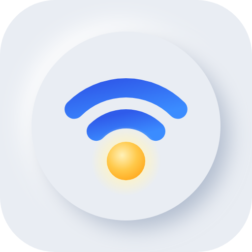

와이파이 날씨
시험판 0.59 · 10월 31일
우리 집 와이파이 상태를 날씨처럼 보여 주고, 방마다 재서 약한 방과 공유기 둘 자리를 알려 주는 앱이에요.
안드로이드 앱 받기0.59 · 7.5M 아이폰·PC 는 미리 보기화면만 둘러보기 — 견본 값실제로 재는 건 안드로이드 앱만 돼요. 아이폰은 애플이 와이파이 신호 세기를 앱에 주지 않아서 아직 못 만들었어요.
회사 와이파이에서는 이 페이지나 받기가 막힐 수 있어요. 폰 데이터(LTE)나 집 와이파이로 받아 주세요. 앱은 지금 붙은 와이파이를 재니 집에서 써 주세요.
안드로이드 설치
- [안드로이드 앱 받기] → 받은 파일 열기
- "출처를 알 수 없는 앱" 안내가 나오면 설정 → 이 출처 허용 켜고 뒤로
- 설치 → 열기 (새 판이 나오면 여기서 다시 받아 덮어 깔면 돼요 — 기록은 그대로)
처음 열면
- 위치 권한 — 안드로이드는 와이파이 이름·옆집 공유기를 보려면 위치 권한이 필요해요. 위치는 저장하거나 보내지 않아요.
- 하루 기록을 켜면 알림 권한을 물어요. 앱을 꺼도 1분마다 재서 언제 느려졌는지 남겨요. 안 켜도 돼요.
써 보는 순서
- 날씨 탭 — 지금 우리 집 와이파이 상태
- 우리집 탭 → 배치 만들기 — 방·욕실·주방·현관을 대충 우리 집처럼 (어플 사용 방법)
- 방마다 폰 쓰는 자리에서 여기서 재기 — 세 번 재면 더 정확해요
- 공유기 자리를 찍으면 옮길 자리·중계기 자리를 알려 줘요

개인정보
기록은 모두 폰 안에만 남아요(앱을 지우면 같이 지워져요). 밖으로 나가는 건 공유기와 구글 DNS(8.8.8.8)로 보내는 응답 확인(핑), 그리고 하루 한 번 이 사이트에서 새 판 번호를 읽는 것뿐이에요(보내는 정보는 없어요). 의견을 보낼 때만 직접 쓴 글과 기기 정보(안드로이드 버전·잰 방 수)가 나가요.
와이파이 날씨 0.59